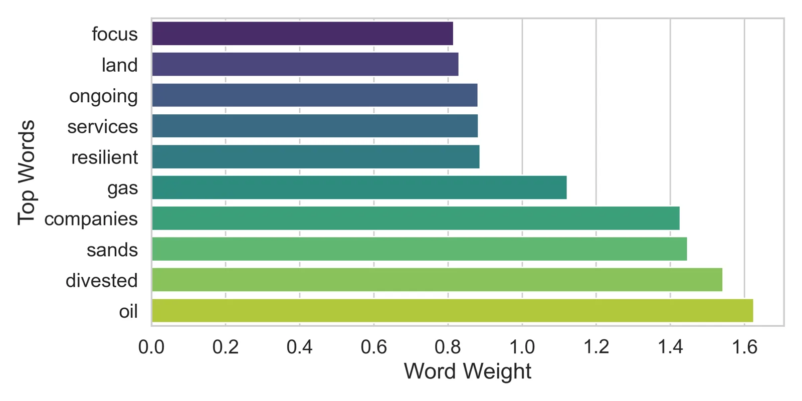

Text analytics: climate sentiment and Twitter NER
Three NLP tasks in one project, where the simplest model won climate sentiment, TF-IDF gave slightly more coherent topics, and a fine-tuned BERT reached 77.9% entity-level F1 on Twitter named entity recognition.
- Context
- MSc Data Science, University of Bristol (text analytics)
- Year
- 2025
- Stack
- Python, scikit-learn, Hugging Face Transformers (bert-base-cased, BERT-tiny), LDA
- Status
- Complete
- Links
- Code on GitHub · Report (PDF)

- 79.0% Naive Bayes accuracy Validation set, 3-class climate sentiment. Neural net 52.5%, BERT-tiny 53.0%
- 0.4445 Topic coherence (c_v) TF-IDF LDA, against 0.4347 for raw counts
- 77.9% Entity-level F1 Twitter NER on the Broad Twitter Corpus test split, strict span matching
Problem
Climate disclosures and social media posts are full of useful information that is hard to pull out: whether a passage describes a climate risk or an opportunity, what themes run through a set of disclosures, and which people, places and organisations a tweet mentions.
Approach
For climate sentiment (risk, neutral or opportunity) I compared Naive Bayes on unigram and bigram counts, a small feedforward neural network and a fine-tuned BERT-tiny trained on 800 examples. For topics I ran LDA on the risk disclosures with raw counts and with TF-IDF weighting. For Twitter NER I fine-tuned bert-base-cased for BIO token tagging on the Broad Twitter Corpus, keeping case because capitals are a strong hint for names.
Key decision: score NER on whole entities, not tokens
Token accuracy flatters a tagger, because most tokens are outside any entity. I scored with strict span matching, which basically means an entity only counts as correct if every token in it has the right label, so a half-found organisation name is a miss.
Results
Naive Bayes won climate sentiment at 79.0% validation accuracy, well ahead of the neural network and BERT-tiny, which shows how far sparse features and careful preprocessing go when there is little data. TF-IDF gave slightly more coherent topics than raw counts. On Twitter NER, people were much easier to find than organisations.
| Entity | Precision | Recall | F1 |
|---|---|---|---|
| Person | 89.0 | 88.4 | 88.7 |
| Location | 72.2 | 62.6 | 67.1 |
| Organisation | 58.0 | 56.9 | 57.4 |
| Overall | 79.0 | 76.8 | 77.9 |
Limitations and next steps
- The sentiment comparison uses validation accuracy rather than a separate test set.
- BERT-tiny had only 800 training examples, so its weak result says more about the data size than about transformers.
- Organisations were the weakest entity type and span boundary errors were a recurring problem, which is where more data or a larger model would help most.